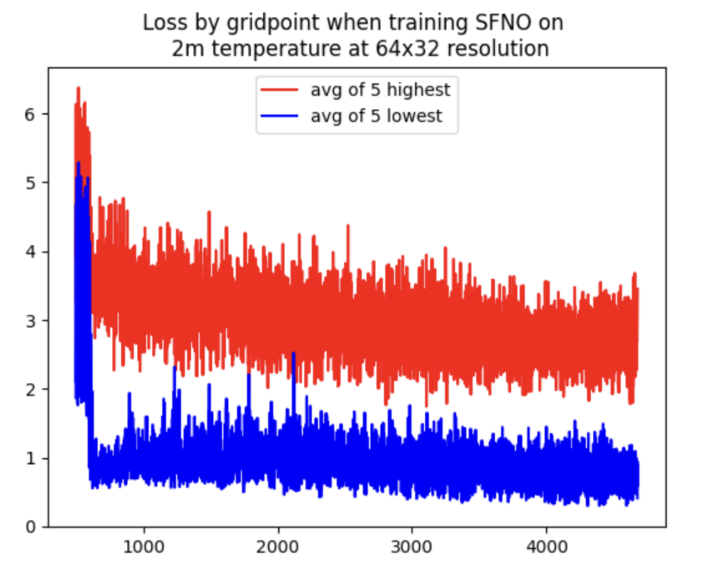
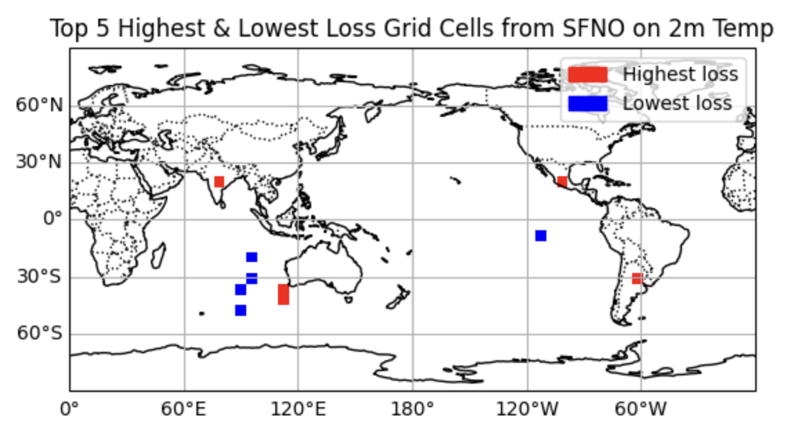

Results from training an SFNO on 2m Temperature from ERA5 from 1959–2010.
Where are these gridpoints of highest and lowest loss?
ML models used for climate or weather predictions are typically assessed on spatially averaged loss metrics.
About the author.